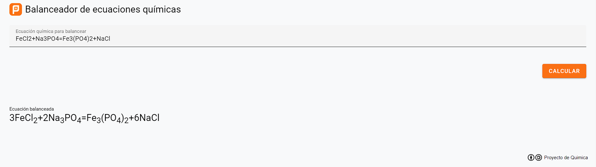

Equilibra tus ecuaciones químicas de manera fácil y rápida.
Nuestro balanceador realiza ajustes automáticamente para cumplir con la conservación de la masa.
Accede a secciones educativas para entender mejor los principios del balanceo de ecuaciones.
Utiliza nuestras herramientas interactivas para simular y aprender sobre diversas reacciones químicas.
El Balanceador Químico es una herramienta poderosa diseñada para simplificar el proceso de balanceo de ecuaciones químicas. Descubre cómo esta herramienta puede ayudarte a comprender y aplicar conceptos fundamentales en química de manera práctica y eficiente.
